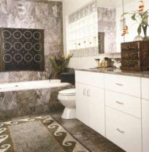
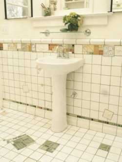
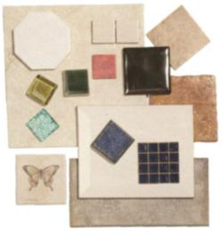

Tile design When designing a new tile installation, don't just think in terms of individual tiles. Instead think of whole surface and of adjacent surfaces, textures, and colors. You do not have to rely heavily on decorative tiles to be decorative. If you want to use specially designed tiles, you have to make sure that they are integrated with the overall scheme. Often you can buy pleasing to the eye tiles to match the colors and sizes of manufacturer's regular tiles.  You can also decide to use a few hand painted tiles but you have to make sure that the sizes and the colors of the tiles are compatible. If you are planning to customize your tiles, be sure to discuss the colors and function of your total project with an artist or designer. |
Designing Tips Design With Budget Because decorative and trim tiles can cost substantially more than regular field tiles, plan ahead to keep the finishing touches from destroying your budget. To avoid this remember not to excessively use of high-priced materials. For instance a few customized, hand painted or marble tiles mixed with regular ones will be more effective than scores of high-end tiles clamoring for attention. It's true that patterned border tiles looks good around the perimeter of a room, but you can achieve a similar effect using regular tiles in a different color. So, by limiting the usage of expensive, decorative tiles they still will be more likely to attract attention.  |
|
 |
In rooms with plenty of windows, consider using darker tiles to offset ambient lighting. Keep The Proportions |
|
Design With Colors Such a big variety of tile colors available on the market can bring you a headache. But because today's fashionable color is often tomorrow's eyesore, white and almond tend to be the tones of choice for most homeowners. These specific colors can help you brighten rooms and can easily coexist with other colors as your decorating schemes change. For most people white or off-white tend to be monotonous, but accent and border colors often cancel out this impression very easily. |
Find out also how to turn your cold tile floor into a luxurious and soothing floor covering, with a tile warming system. |
© Copyright 2005 TileEstimator.com All Rights Reserved